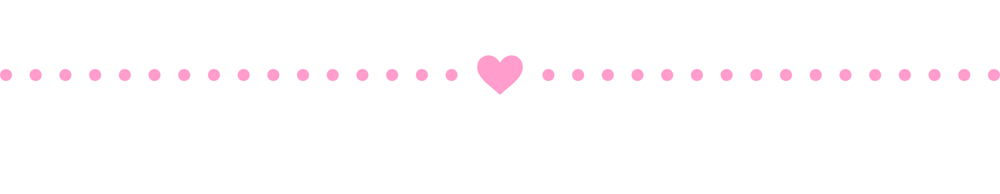

INFORMATION
参加方法・ご案内

■ Join方法
1. 事前にVRChatグループ「てんしのふれあい（TENFLR.3744）」へご参加ください。
VRChat Group
Check →
てんしのふれあい 公式グループ
2. リクイン時間になりましたら、インスタンスリーダーへ【1回】リクエストインバイトを送信してください。
3. リクインの承認通知が来ましたらJoinをお願いします。
平日
リクイン 20:50
▶
オープン 21:00
休日
リクイン 21:50
▶
オープン 22:00
■ 対応プラットフォーム
PCVR / Desktopワールド
■ お願い・注意事項
・アバターの容量やパーティクル・シェーダーの過度な使用はお控えください。
・他のご主人様・お嬢様やキャストへの迷惑行為はご遠慮ください。
・撮影したお写真はX（旧Twitter）にてぜひハッシュタグ #てんしのふれあいvrc でシェアしてください♪